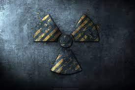

Назва:S.T.A.L.K.E.R 2
Жанри: Шутер від першої особи, Survival horror, Пригодницький бойовик
Розробник: GSC Game World
S.T.A.L.K.E.R. 2: Серце Чорнобиля є довгоочікуваним продовженням легендарної серії ігор, розробленої українською студією GSC Game World. Після років очікувань та змін у планах розробки, гра обіцяє принести нові пригоди в Зоні, заповненій небезпеками, аномаліями та артефактами.
Оголошено про відновлення розробки гри у 2018 році, із планами випуску на базі рушія Unreal Engine 4, що віщує значні поліпшення в графіці та ігровому процесі. Розробники також підтвердили, що гра буде підтримувати користувацькі модифікації, як і попередні ігри серії
Згідно з останніми оновленнями, S.T.A.L.K.E.R. 2 планується до випуску в середині лютого 2024 року. Гра розробляється для PC та консолей Xbox Series X|S і буде доступна в Game Pass з дня релізу. Це значно підвищує доступність гри для широкої аудиторії.
Офіційні трейлери та тизери, опубліковані розробниками, відкривають завісу таємниці над світом гри, демонструючи поліпшену графіку, деталізований ігровий світ та нові можливості для гравців. Серед нововведень - розширення ігрового світу, покращена система А-Life, що відповідає за симуляцію живого світу, та глибше занурення в атмосферу Зони. Фанати серії з нетерпінням чекають на вихід гри, сподіваючись на нові пригоди та виклики, які чекають на них у непередбачуваному та небезпечному світі S.T.A.L.K.E.R. 2.